当前方向（E/F 组）：与游戏建筑同材质——面板取自房屋的米白灰泥墙与胡桃木梁，按钮取自屋顶的鼠尾草绿，手绘水彩质感；全套覆盖每个界面状态。每组两张候选，点击大图可放大预览，点「选它」高亮标记你的选择。
面板=游戏房屋的米白灰泥墙 + 胡桃木梁边框（#F5EFDC / #7D4B19），按钮=屋顶鼠尾草绿（#648241），手绘水彩质感——UI 就是用盖房子的材料做的。
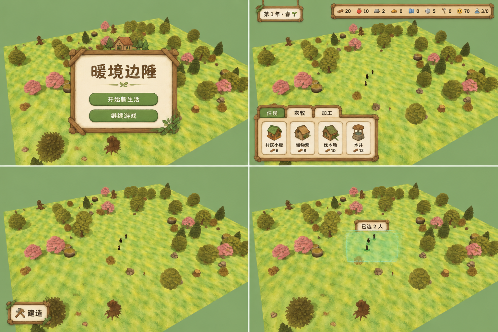
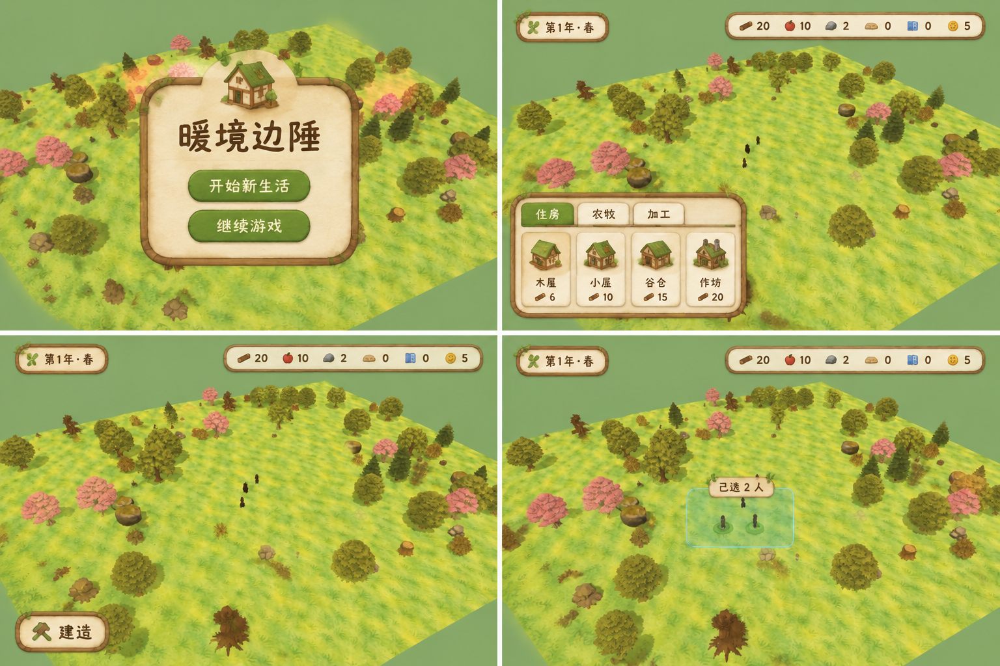
同材质语言覆盖全部面板：科技树三层依赖（绿勾已研究 / 绿胶囊可研究 / 灰锁虚线未解锁）、总览产耗趋势+告警细条、村民卡+村志、事件弹窗主次按钮。
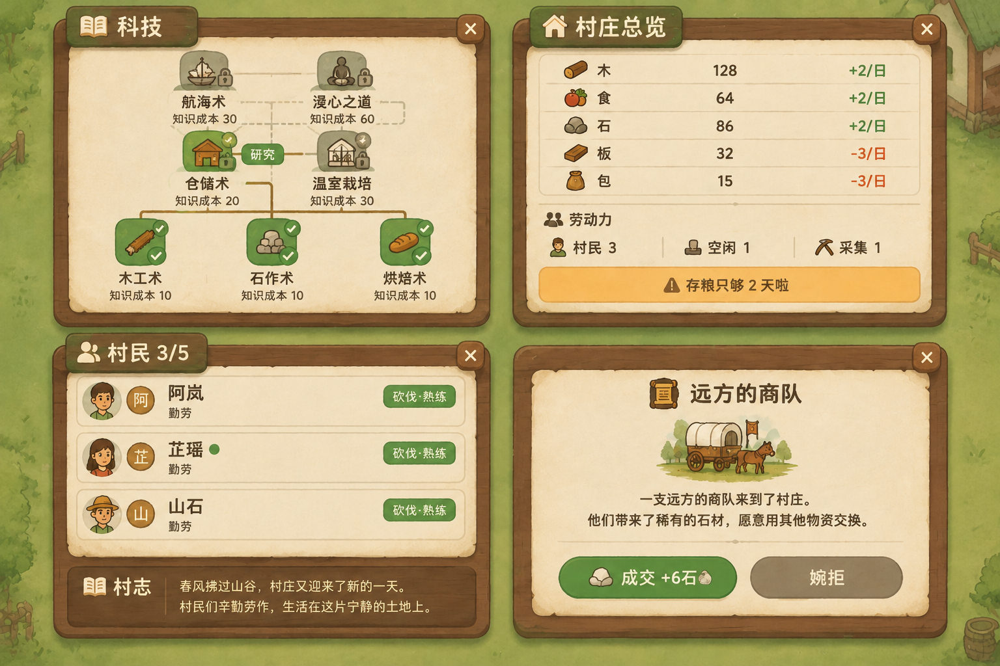
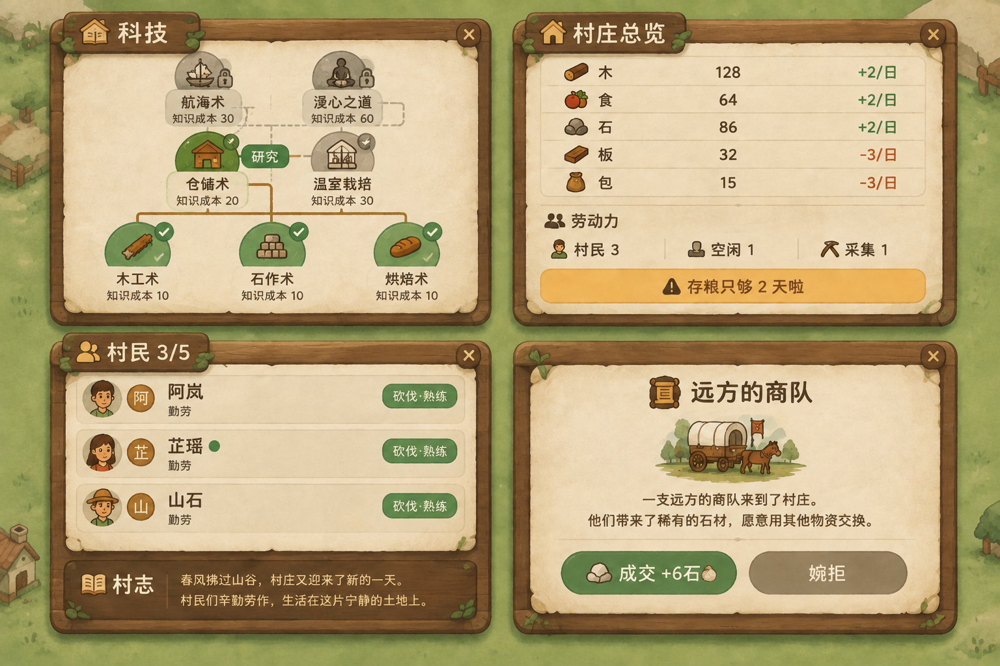
纯奶油白平板圆角卡 + 2px 暖灰细线，无木纹无金色无浮雕；草绿胶囊按钮、圆体深棕字。主菜单 → 游戏常态 → 建造坞收起 → 框选村民。
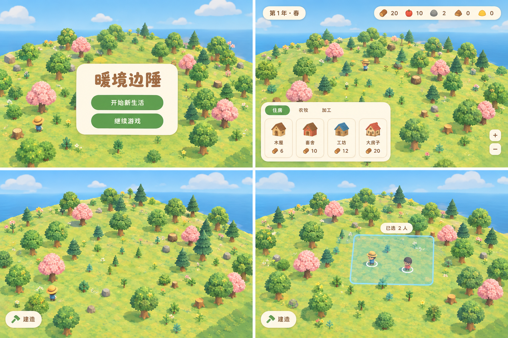
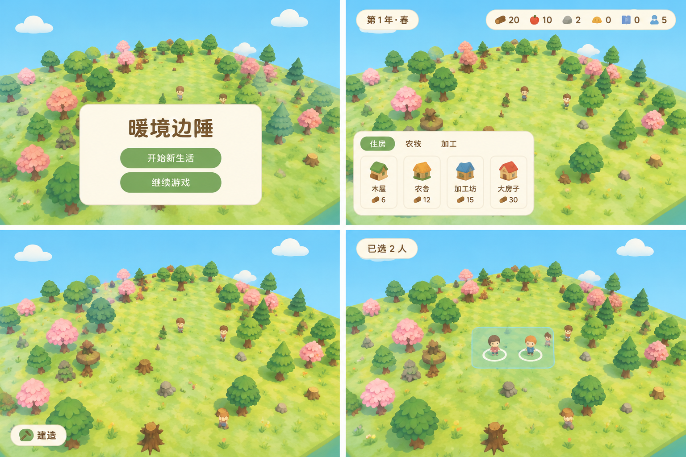
科技树=可爱圆角方块节点+浅棕细连线（已研究绿块对勾 / 可研究绿胶囊 / 未解锁灰锁）；总览趋势用小箭头、告警改淡橘细条「存粮只够 2 天啦」；村民卡淡绿称号胶囊；事件弹窗白卡+插画+主次胶囊按钮。
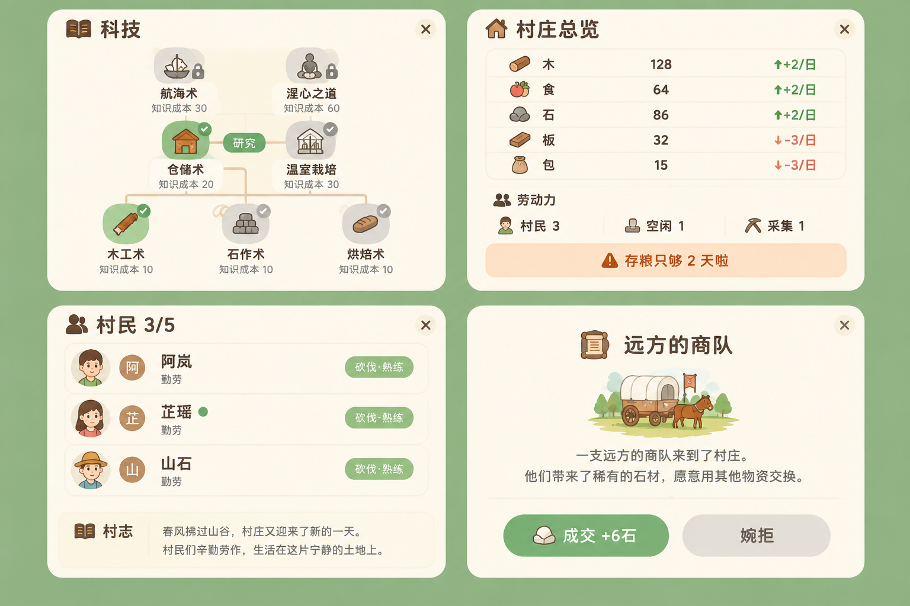
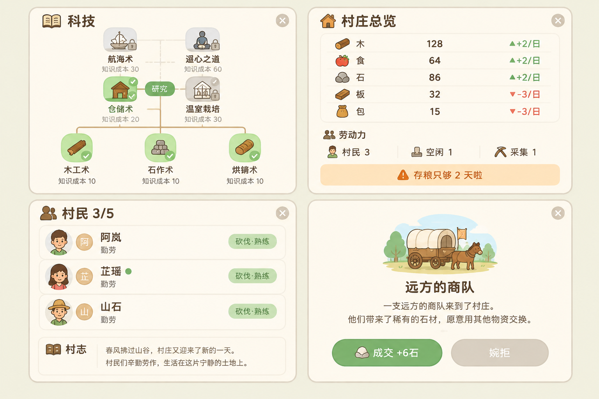
主菜单（书法招牌+木牌按钮）→ 游戏常态（四角簇：日期吊牌/资源条/建造坞）→ 建造坞折叠态（一条细木签）→ 框选派工态（金色选中环+亮环+「已选 2 人」）
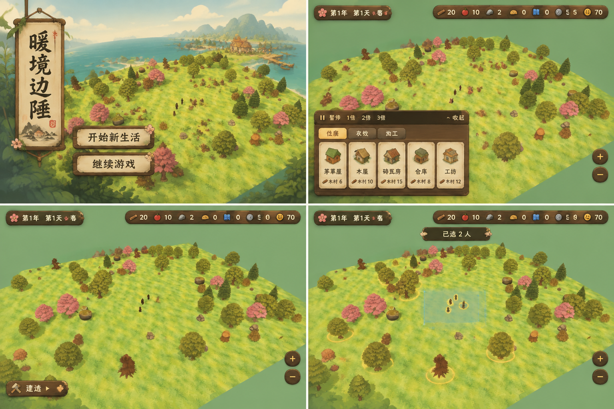
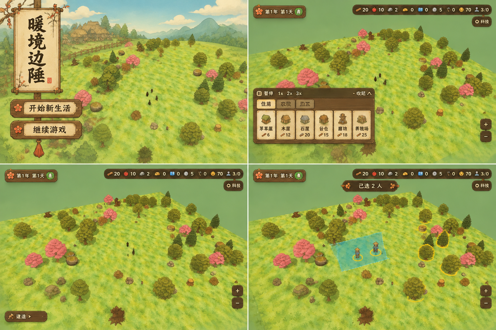
科技为三层树状依赖：已研究金圈勾选 → 可研究绿色按钮 → 未解锁灰锁虚线；总览含产耗净趋势与告警条；村民卡带特质称号与村志；事件弹窗主次按钮。
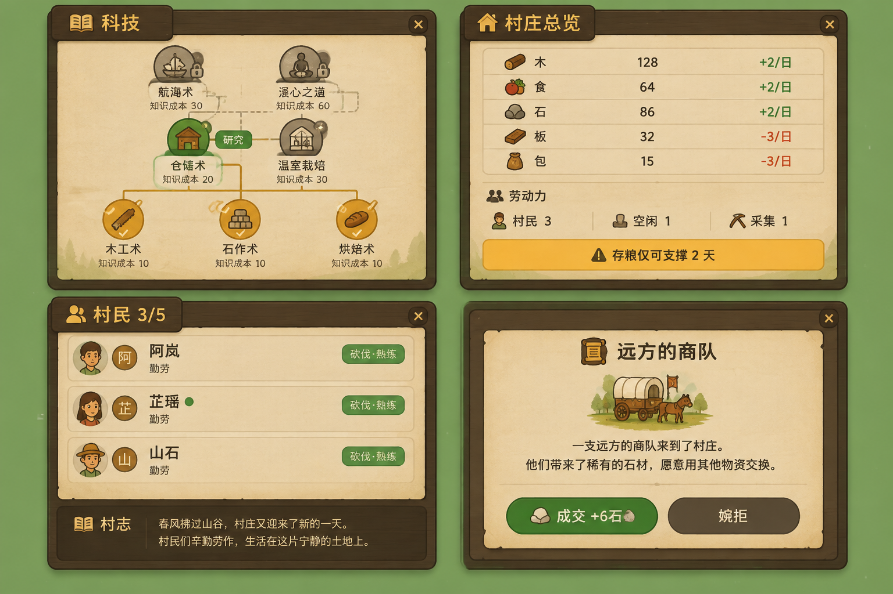
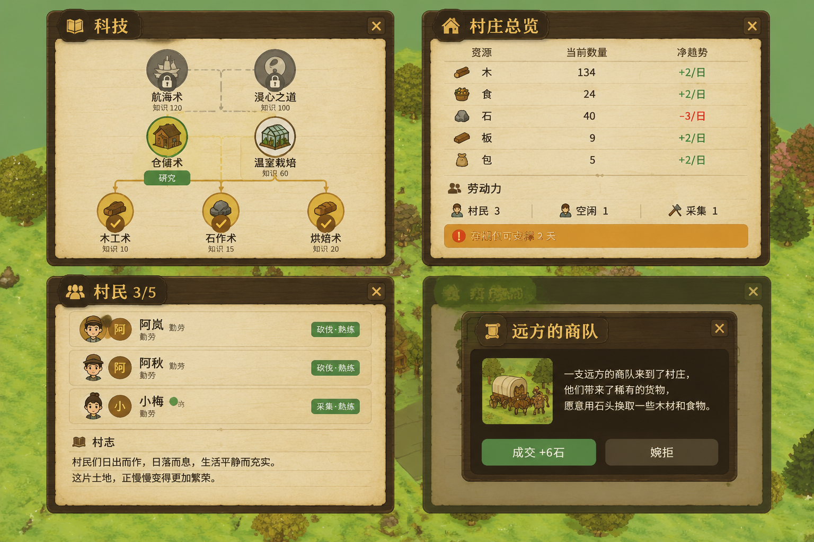